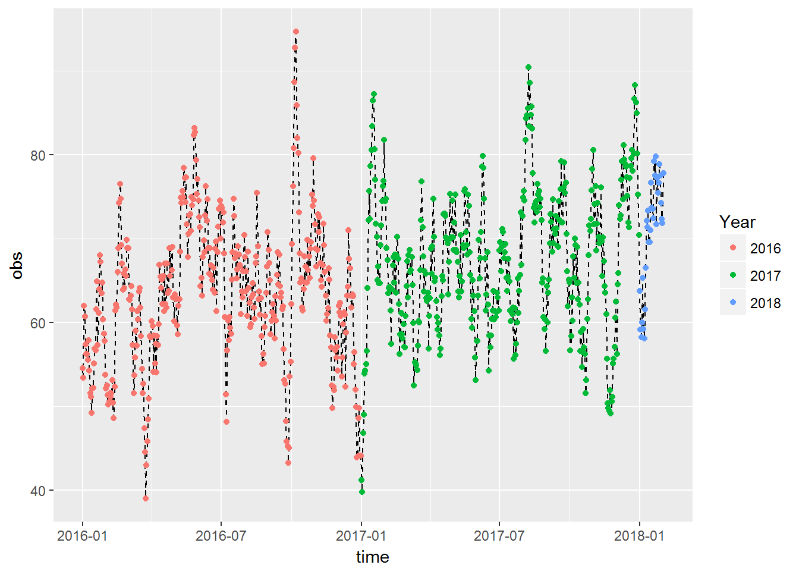

Methods for air data analysis
Introduction
Best practices
Tidyverse
Keeping R up-to-date
Script layout
Divide and conquer
Codebooks, metadata, and data dictionaries
Pollutant names
Formatting data
Get data
Air monitoring
Retrieving data from AQS
Retrieving data from AQS DataMart
Current AQI observations
Active air monitors
Retrieving data from LIMS via Tableau
Retrieving continuous data from AirVision
Retrieving data from MPCA WAIR database
Air toxics
Health and standards
Inhalation health benchmarks (IHBs)
Air Quality Standards (NAAQS and MAAQS)
Air modeling
NATA modeling
MNRISKS statewide risk modeling
Downscaler modeling results for Ozone and PM2.5
CMAQ Ozone modeling
Context
MN Emissions Inventory
EPA’s NEI
Facility locations
Weather observations
HYSPLIT wind trajectories
Land use maps
United States Census boundaries
American Community Survey (ACS)
Quality assurance methods
Data cleaning
Blank, NULL, and missing values
Remove
Qualified
data
Duplicate observations
Data validation
Instrument drift or leaks in a system.
Exceptional values and outliers
Sequential repeats and “sticky” numbers
Unique detected values
References
Collocated monitors
Evaluate collocated air monitors
Prioritize multiple air monitors (POCs)
Detection limits
Method Detection Limit
Calculating MDLs
Finding MPCA detection limits
Qualifier Codes for Detection Limits
Estimating below detection values
(what not to do)
Below detection values
Multiple detection limits
References
Completeness checks
Completeness checks
Summary methods
Summary statistics
Test for normality
Bootstrapping
Below the detection limit
Upper confidence limits (UCLs)
Annual summaries for incomplete data
Comparison of data to inhalation health benchmarks
Rolling 365 day summaries
Site comparisons
Confidence intervals
Tools to visualize data
Beeswarm Plots
Correlation matrices
Start to finish
Functions
Analysis steps
Charts
Boxplots
Log boxplots
Outliers
Calendar plots
Colors and themes
Pollution roses
Time series
Seasonality
Maps
Creating shapefiles in R and joining to EJ areas
Spatial averaging and aggregation
Additional resources
MPCA data tools
AQI explorer
Criteria pollutant explorer
Air toxics explorer
MPCA Air Toxics Methods
Data Cleaning
Data Validation
Parameter Occurrence Codes (POCs)
Producing Annual Summaries
Edit this book
Created by MPCA-air
Time series
Seasonality
This section is a work in progress.
